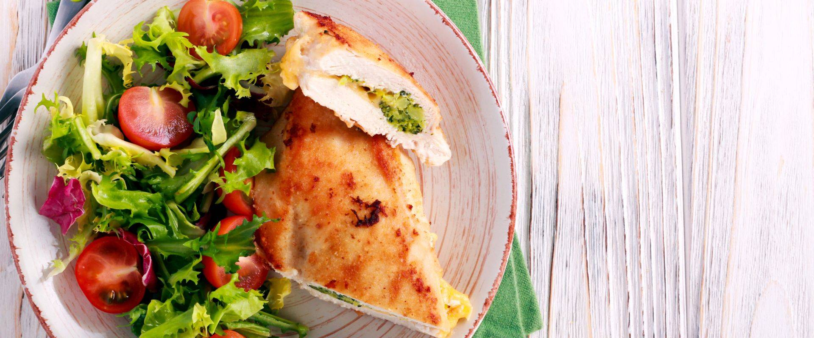

Brokkolival és sajttal töltött csirkemell

Ha a tepsiben sült csirkemellet kiegészíted egy kevés brokkolival és sajttal, igazán laktató és izgalmas főfogást kapsz.
Hozzávalók
- 4 db csirkemell
- 1 db brokkoli
- 15 dkg sajt
- 2 ek olívaolaj
- 1 gerezd fokhagyma
- só
- bors
Elkészítés
- A megtisztított csirkemelleket hosszában vágjuk be egy éles késsel, de arra ügyeljünk, hogy ne vágjuk át teljesen, készítsünk rajta egy zsebet. Kicsit klopfoljuk ki, majd sózzuk meg. Az olívaolajat keverjük össze borssal, zúzott fokhagymával, majd kenjük be vele a csirkemelleket.
- A brokkolit szedjük rózsáira, és sós vízben főzzük körülbelül 6 percig. Amikor még roppanós, szűrjük le, és csepegtessük le. Villával törjük össze, és ízlés szerint sózzuk, borsozzuk. A sajtot reszeljük le.
- A csirkébe vágott mélyedést töltsük meg a brokkolival és a reszelt sajttal. Érdemes egy hústűvel vagy fogvájóval megtűzni a csirkemellet, hogy a töltelék ne folyjon ki belőle.
- Rakjuk a megtöltött húsokat zsiradékkal kikent tepsibe. Öntsünk alájuk kevés vizet, és fedjük le fóliával. Tegyük az előmelegített sütőbe, és 180 fokon süssük körülbelül 45 percig. A sütés vége felé levehetjük a fóliát, hogy a hús szép piros legyen. Amikor a csirke puha, a sajt megolvadt, kivehetjük a sütőből.